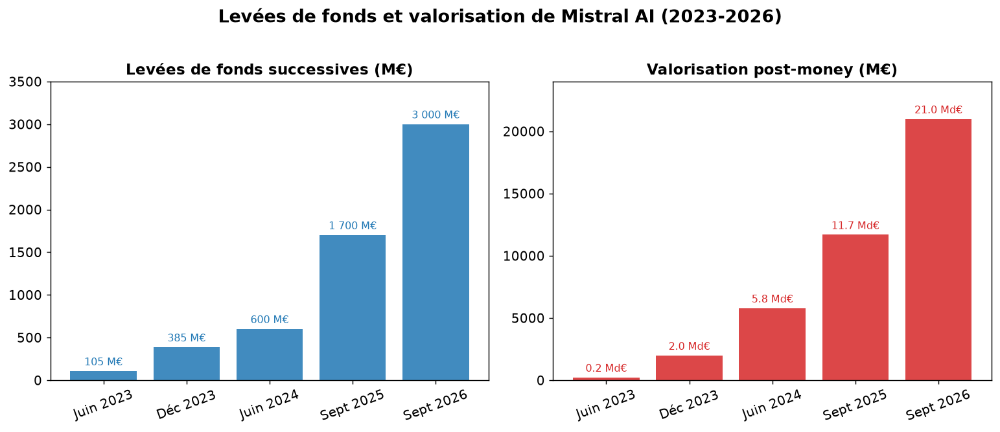
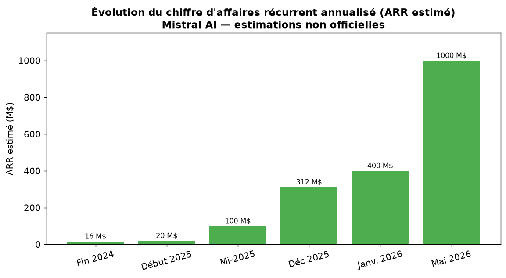

API and Vibe
The API and Vibe platform (formerly Le Chat) provide access to models via subscription or usage-based billing.
This page presents the business strategy, estimated revenue, partnerships and funding of Mistral AI.
Founded in April 2023 by Arthur Mensch, Guillaume Lample and Timothée Lacroix, Mistral AI combines open-weight models and proprietary models (Wikipedia).
Small and medium-sized models, such as Ministral and Mistral 7B, are distributed under the Apache 2.0 license. Advanced models, such as Mistral Large 2 and Devstral 2, use proprietary terms.

Mistral AI does not publish official revenue figures. The values below are therefore secondary estimates. ARR, or Annualized Recurring Revenue, projects revenues on an annual basis.
According to Sacra, ARR would have increased from approximately $16 million at the end of 2024 to $400 million in January 2026. Secondary sources then mention an ARR exceeding one billion dollars.

| Period | Value | Source |
|---|---|---|
| End of 2024 | ~$16M (ARR) | Sacra |
| 2024 | ~€30M (Revenue) | Sifted / Financial Times |
| Early 2025 | ~$20M (ARR) | Sacra |
| Mid-2025 | ~$100M (ARR) | 24pm |
| December 2025 | ~$312M (ARR) | Sacra |
| January 2026 | ~$400M (ARR) | Sacra |
| May 2026 | ~$1,000M (ARR) | Presenc AI |
Figures are estimates: Mistral AI is not publicly traded and does not publish official financial data.
The API and Vibe platform (formerly Le Chat) provide access to models via subscription or usage-based billing.
Frontier models can be offered under license to large enterprises.
Mistral AI supports the integration of its models into organizations' processes.
Commercial partnerships, particularly with Microsoft for Azure, complement this revenue. Net income remains negative due to model training costs and investments in infrastructure.
Mistral AI works with Microsoft, ASML, HSBC, CMA CGM, Airbus, EDF and BMW. These agreements concern distribution on Azure, AI integration in business processes, and research.
The five main equity funding rounds represent nearly €5.8 billion. In addition, there is a $830 million loan for a data center in Bruyères-le-Châtel, France.
| Date | Amount Raised | Valuation | Investors |
|---|---|---|---|
| June 2023 | €105M | ~€240M | Lightspeed, Eric Schmidt, Xavier Niel |
| December 2023 | €385M | $2B | Andreessen Horowitz, BNP Paribas, Salesforce |
| June 2024 | €600M | €5.8B | General Catalyst |
| September 2025 | €1.7B | €11.7B | ASML |
| September 2026 | €3B | €21B | Samsung Electronics |
By offering open models, deployments on secure networks and European anchoring, Mistral AI positions itself as a European alternative to OpenAI and Google.
Main sources: Wikipedia, Sacra, Financial Times